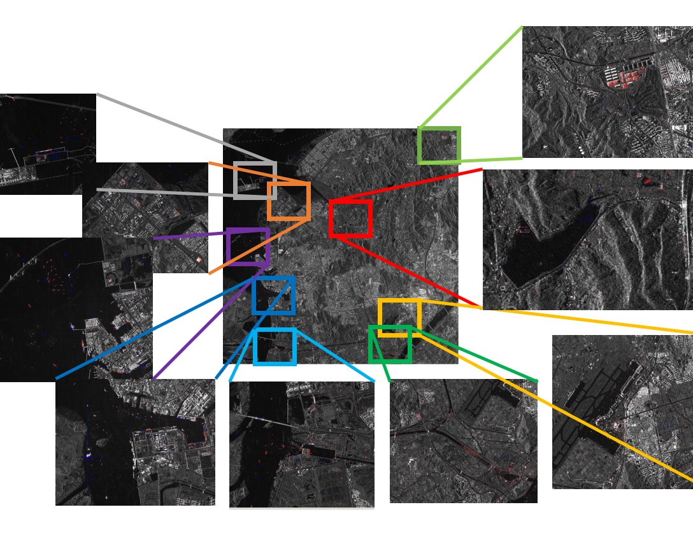
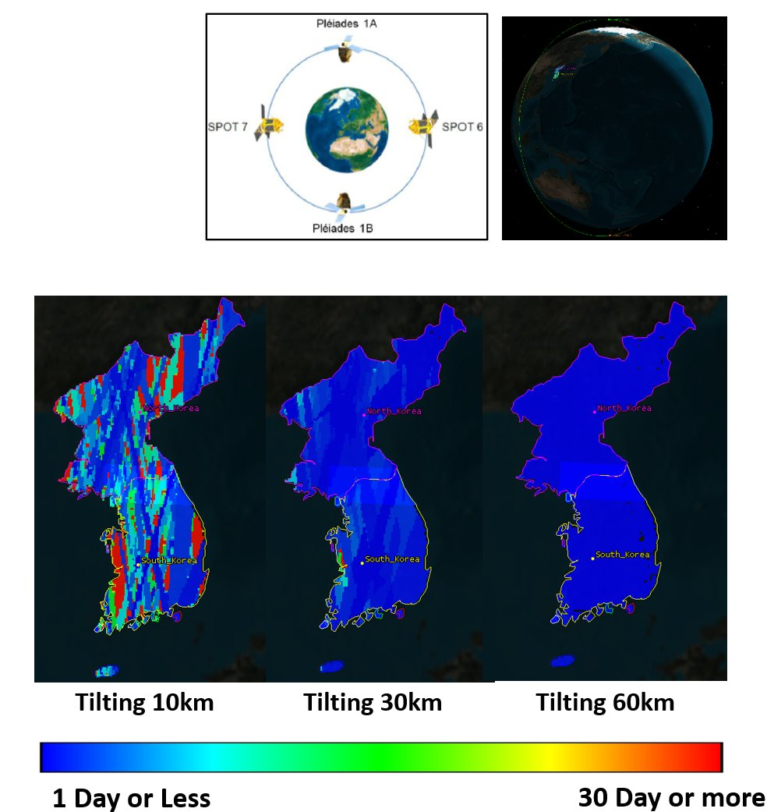

연구 분야
우주위성전자 시스템

개요
우주위성전자 시스템 분야는 우주위성 관측 레이다 영상의 활용을 다루는 연구 영역이다. 위성 SAR 영상을 활용한 표적 탐지와 변화 탐지, 그리고 SAR 관측 위성의 임무 설계 및 성능 분석을 수행한다. 위성 국산화를 위한 한반도 관측 성능 분석과 광학 및 SAR 관측 위성의 차별적 특성 연구도 함께 진행한다.
세부 연구
위성 SAR 영상 분석 및 활용
위성 SAR 영상을 활용하여 표적 탐지를 수행하고 자동화 알고리즘을 구현한다. 시계열 SAR 영상 품질 분석을 통해 변화 탐지를 수행한다. AI 알고리즘을 적용하여 미세 변화 탐지/감시 및 정량화를 연구한다.
SAR 관측 위성 임무 설계 및 성능 분석
레이다 위성 영상의 변화 탐지 분석과 임무 설계에 관한 연구를 수행한다. 위성 국산화를 위한 한반도 관측 성능을 분석한다. 광학 및 SAR 관측 위성의 차별적 특성을 연구한다.
관련 과제
- 위성 SAR 영상에서의 AI 기반 선박 탐지 및 수질 특성 관측을 위한 데이터 분석 알고리즘 연구 (2024)
- 위성 SAR 영상을 통한 표적 관측 및 영역 식별을 위한 AI 알고리즘 활용 (2024)
- 소형 위성 SAR 영상의 이동 표적 식별을 위한 AI 알고리즘 연구 (2023)
- 위성 SAR 기반 이동 표적 탐지 연구 (2022)
- 고해상도 SAR 영상을 이용한 미세 변화탐지 알고리즘 개발 (2013)
- 농림업 중형위성 탑재체 개발을 위한 위성영상 활용 분석 및 전략 수립 (2014)
관련 논문
- 위상 시계열 마이크로 도플러 분석을 이용한 Dwell 모드 위성 SAR 기반 교량 고유진동수 추정 (2026)
- Performance Comparison between Monostatic and Bistatic Staring Spotlight Modes Based on Several Scenarios (2025)
- Performance Evaluation of Spaceborne Bistatic SAR Systems (2024)
- 이동 표적 탐지 및 추적을 위한 단일 채널 기반 고해상도 위성 SAR 영상 모드 구현 (2023)
- STK를 이용한 고해상도 위성 SAR 운용 및 표적물 추출 기법 (2013)
- 통계분포에 기반한 고해상도 SAR 영상의 변화탐지 알고리즘 구현 (2015)
- Development of change detection algorithm using high resolution SAR complex image (2015)
- Design of SAR image feature detector for small-scaled coherent change detection (2016)
- SURF 기법을 활용한 위성 SAR 다중해상도 영상의 정합 및 기하보정 (2014)
- 효율적인 농림업 위성관측을 위한 탑재체 기술사양 분석 (2016)
연구 사진·도식
